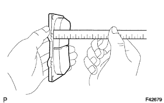

FRONT BRAKE > INSPECTION |
| 1. CHECK BRAKE CYLINDER AND PISTON |
Check the cylinder bore and piston for rust or scoring.
If necessary, replace the disc brake cylinder assembly.
| 2. CHECK PAD LINING THICKNESS |
|  |
Using a ruler, measure the pad lining thickness.
| 3. CHECK DISC THICKNESS |
Using a micrometer, measure the disc thickness.
| 4. CHECK DISC RUNOUT |
Install the disc with the 6 hub nuts.
Using a dial indicator, measure the disc runout 10 mm (0.394 in.) from the outer edge of the disc.
Remove the 6 hub nuts and disc.